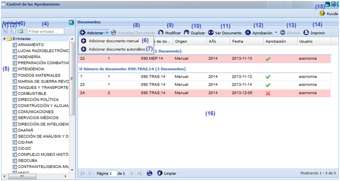
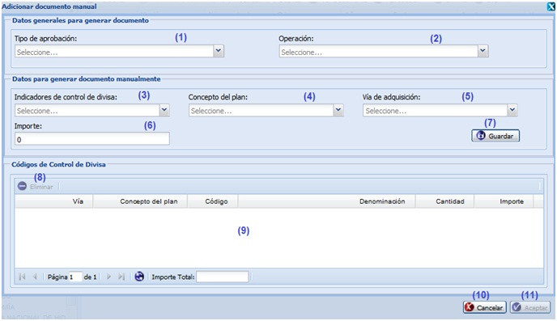
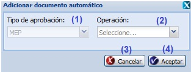

--Control de las aprobaciones--
Para acceder a esta funcionalidad se debe seguir la siguiente ruta: Inicio\Planificación material\Control de divisa\Control de las aprobaciones. Luego de acceder a la funcionalidad Control de las aprobaciones el sistema mostrará la siguiente interfaz, ver figura 1.

Figura 1. Control de las aprobaciones
Las diferentes opciones que conforman la Figura anterior permiten:
- Expandir todas las entidades.
- Colapsar todas las entidades.
- Refrescar todas las entidades.
- Filtrar entidades.
- Mostrar la lista de entidades existentes en el sistema.
- Adicionar documento manual, ver Adicionar documento manual. Para llegar a esta acción debe desplegar el botón Adicionar y seleccionar la misma.
- Adicionar documento automático, ver Adicionar documento automático. Para llegar a esta acción debe desplegar el botón Adicionar y seleccionar la misma.
- Actualizar documento. Se mostrará un mensaje de confirmación que se puede aceptar o cancelar según sea el caso. Se puede acceder a esta acción de manera rápida seleccionando el documento que quiere actualizar y presionando la combinación de las teclas ( Ctrl + Alt + Z).
- Modificar documento de aprobación. Se puede acceder a esta interfaz de manera rápida seleccionando el documento que desea modificar y presionando la combinación de teclas
(Alt + M) . Esta acción es muy similar a la acción de Adicionar documento manual.
- Duplicar documento de aprobación. Se puede acceder a esta interfaz de manera rápida seleccionando el documento que desea duplicar y presionando la combinación de teclas (Ctrl + Alt + D) . Esta acción es muy similar a la acción de Adicionar documento manual.
- Ver documento, esta acción permite ver los datos generales que tiene un documento de aprobación. Se puede acceder a esta interfaz de manera rápida seleccionando un documento y presionando la combinación de las teclas (Alt + D) .
- Aprobar y Desaprobar. La acción de Aprobación, se debe desplegar el botón y seleccionar las siguientes acciones:
- La acción Aprobar documento permite aprobar el documento. El sistema inmediatamente le mostrará un mensaje de confirmación que puede o no aceptarlo según desee, si acepta el mensaje el sistema mostrará un mensaje de información notificando que se aprobaron los documentos satisfactoriamente quedando así el estado el documento cambiado en la columna Aprobado. Se puede acceder a esta acción de manera rápida seleccionando el documento que desea aprobar y presionar la combinación de las teclas (Alt + Q).
- La acción Desaprobar documento permite desaprobar el documento. El sistema inmediatamente le mostrará un mensaje de confirmación que puede o no aceptarlo según desee, si acepta el mensaje el sistema mostrará un mensaje de información notificando que se desaprobaron los documentos satisfactoriamente quedando así el estado del documento cambiado en la columna Aprobado. Se puede acceder a esta acción de manera rápida seleccionando el documento que desea desaprobar y presionar la combinación de las teclas (Alt + W) .
- Eliminar documento de aprobación. Se mostrará un mensaje de confirmación que se puede aceptar o cancelar según sea el caso. Se puede eliminar un documento de manera rápida seleccionando el mismo y presionando la tecla (Del) .
- Imprimir documento, ver Imprimir documento. Se puede imprimir un documento de manera rápida seleccionando el mismo y presionado la combinación de las teclas (Alt + P) .
- Mostrar la ayuda de la funcionalidad. Se puede acceder a esta interfaz con la combinación de las teclas (Alt + H) .
- Mostrar el listado de los documentos existentes en el sistema.
Pre-condiciones y validaciones que se debe tener en cuenta a la hora de realizar alguna acción en el sistema:
- Para actualizar un documento:
- El usuario debe tener permiso para acceder a la funcionalidad. Este usuario debe ser un usuario con categoría rector.
- Debe existir al menos un documento de aprobación listado en el sistema.
- Si el documento de aprobación seleccionado se encuentra en estado de aprobación Desaprobado, se actualiza el mismo documento sin necesidad de crear una nueva versión del mismo. En caso que se encuentre en estado Aprobado y sea un documento automático, se generará una nueva versión automática del mismo.
- Una vez actualizado el documento, el sistema actualiza los valores de los indicadores que hayan sufrido algún cambio en el plan donde se encuentren.
- Para Ver un documento:
- Debe existir al menos un documento de aprobación insertado en el sistema.
- Si el documento seleccionado es un documento automático se le mostrará una aprobación que contendrá cada uno de los códigos de control de divisa consolidados por los indicadores de la planificación que han demandado indicadores a la entidad seleccionada y que a su vez se encuentren asociados algún indicador de control de divisa y/o concepto del plan.
- Para aprobar un documento:
- El usuario debe tener permiso para acceder a la funcionalidad. Este usuario debe ser un usuario con categoría rector.
- Debe existir al menos un documento de aprobación registrado en el sistema.
- La opción Aprobar solo se habilitará si el documento de aprobación seleccionado se encuentra en estado desaprobado. Una vez aprobado el documento no se podrá eliminar el mismo.
- Para desaprobar un documento:
- El usuario debe tener permiso para acceder a la funcionalidad. Este usuario debe ser un usuario con categoría rector.
- Debe existir al menos un documento con estado aprobado.
- La opción Desaprobar solo se habilitará si el documento de aprobación seleccionado se encuentra en estado aprobado.
- Para eliminar un documento:
- El usuario debe tener permiso para acceder a la funcionalidad. Este usuario debe ser un usuario con categoría rector.
- Debe existir al menos un documento de aprobación registrado en el sistema.
- La opción Eliminar solo se habilitará si el documento de aprobación seleccionado no se encuentra aprobado.
Adicionar documento manual
Se despliega el botón Adicionar de la interfaz, se selecciona la acción Adicionar documento manual, opción (6), ver figura133. Inmediatamente aparecerá una ventana mostrando los campos que debe llenar para adicionar un documento manual. Ver figura 2.

Figura 2. Adicionar documento manual
Las diferentes opciones que conforman la Figura anterior permiten :
- Seleccionar el tipo de aprobación.
- Seleccionar el tipo de operación a efectuar sobre el documento.
- Seleccionar un indicador de control de divisa de los listados al desglosar el campo.
- Seleccionar un concepto del plan de los listados al desglosar el campo.
- Seleccionar una vía de adquisición de las listadas al desglosar el campo.
- Introducir el valor del importe del documento a insertar.
- Guardar los datos del documento. El sistema adiciona automáticamente una fila con cada uno de los datos insertados con anterioridad en el panel inferior Códigos de control de divisa y limpia cada uno de los datos insertados en el panel superior Datos generales para generar documento.
- Eliminar código. Una vez seleccionada dicha acción el sistema le mostrará el mensaje de confirmación que puede aceptar o cancelar según desee. Se puede realizar esta acción de manera rápida seleccionando el código que desea eliminar y presionando la tecla (Del) .
- Mostrar el listado de códigos de control de divisa.
- Cerrar la ventana sin guardar los datos.
- Cerrar ventana y guardar los datos.
Nota : Para adicionar un documento manual hay que tener en cuenta las siguientes validaciones para los campos Tipo de aprobación, Operación, Indicador de control de divisa, Concepto del plan, Vía de adquisición e Importe:
- Todos los campos de la interfaz son obligatorios excepto los campos Concepto del plan e importe, en caso de dejar alguno de los campos obligatorios vacíos el sistema mostrará un mensaje de error en el mismo campo.
- El campo importe es un campo numérico que solo acepta números hasta 3 dígitos y el carácter especial (.), de introducir cualquier otro carácter el sistema le mostrará un mensaje de error en el mismo campo. Si introduce más de 3 caracteres el sistema le mostrará un mensaje de error en el mismo campo.
- Por cada tipo de aprobación se debe generar un documento de aprobación, en caso de ya existir todos los documentos de aprobación insertados en el sistema para la entidad seleccionada, al seleccionar la opción Adicionar documento manual, el sistema le mostrará el mensaje de información notificando que ya se han generado documentos con cada tipo de aprobación.
Adicionar documento automático
Se despliega el botón Adicionar de la interfaz, se selecciona la acción Adicionar documento automático, opción (7), ver figura1. Inmediatamente aparecerá una ventana mostrando los campos que debe llenar para adicionar un documento manual. Ver figura 3.

Figura 3. Adicionar documento automático
Las diferentes opciones que conforman la figura anterior permiten :
- Mostrar el tipo de aprobación.
- Seleccionar el tipo de operación a efectuar sobre el documento.
- Seleccionar el tipo de operación a efectuar sobre el documento.
- Cerrar ventana y guardar los datos.
Nota : Para adicionar un documento automático hay que tener en cuenta las siguientes validaciones:
- El campo Operación es obligatorio, en caso de dejarlo vacíos el sistema mostrará un mensaje de error en el mismo campo.
- Por cada tipo de aprobación se debe generar un documento de aprobación, en caso de ya existir todos los documentos de aprobación insertados en el sistema para la entidad seleccionada, al seleccionar la opción Adicionar documento automático, el sistema le mostrará el mensaje de información notificando que ya se han generado documentos con cada tipo de aprobación.
- Si la entidad seleccionada no presenta indicadores planificados o estos indicadores no se encuentran asociados a ningún indicador de control de divisa y/o concepto del plan, al seleccionar la opción Adicionar documento automático el sistema le mostrará un mensaje de información notificando que no se puede crear la aprobación porque la entidad seleccionada no presenta indicadores planificados o asociados.